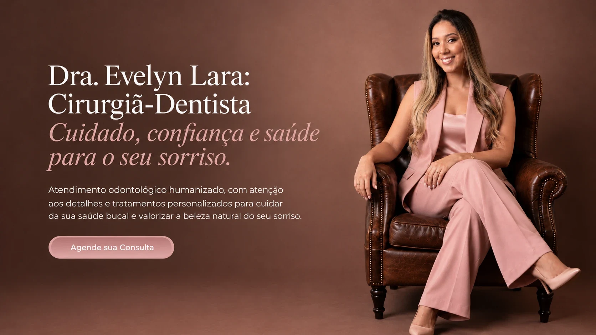
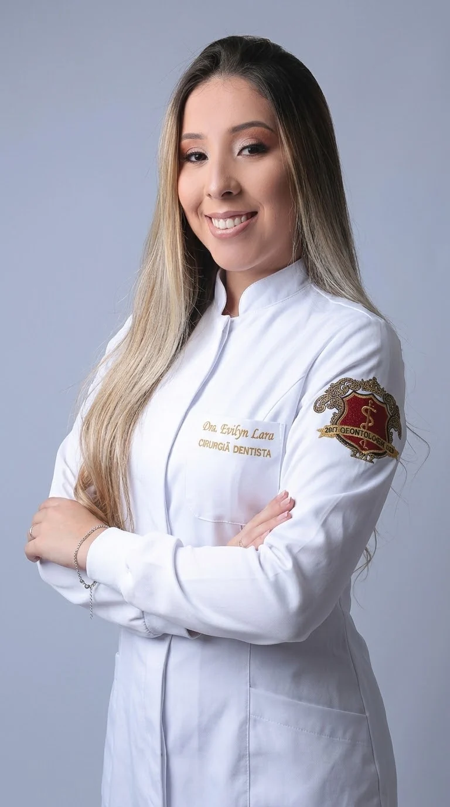

Odontologia • Cuidado personalizado
Dra. Evelyn Lara: Cirurgiã-Dentista
Cuidado, confiança e saúde para o seu sorriso.
Atendimento odontológico humanizado, com atenção aos detalhes e tratamentos personalizados para cuidar da sua saúde bucal e valorizar a beleza natural do seu sorriso.

Sobre a profissional
Mais do que cuidar de sorrisos, cuidar de pessoas.
Cada pessoa chega ao consultório com uma história, expectativas e, muitas vezes, alguma insegurança. Por isso, o atendimento começa pela escuta: entender o que você sente, o que deseja e o que é importante para você.
A partir dessa conversa, cada etapa é explicada com clareza e transparência, para que você participe das decisões sobre o seu tratamento com tranquilidade e confiança.
- 5 anoscuidando de sorrisos em Campo Belo
- +200clareamentos realizados
Clínica Geral · atuação em clareamento dental
- Escutaatenta e sem pressa
- Clarezaem cada explicação
- Cuidadoindividualizado
Tratamentos
Cuidado planejado para cada sorriso.
Cada tratamento é indicado após uma avaliação individual, respeitando suas necessidades, seu tempo e as características naturais do seu sorriso.
Solicitar uma avaliação
Conteúdo demonstrativo. Os tratamentos abaixo são exemplos de layout e ainda não foram confirmados pela profissional. Eles não aparecem no site publicado até serem validados em config.js.
Dra. Evelyn Lara · Cirurgiã-Dentista · Clínica Geral · CRO-MG 60043
Cuidado essencial
Clínica geral
Atendimento odontológico geral: avaliação, diagnóstico e orientação para cuidar da saúde da sua boca como um todo.
Saber mais sobre Clínica geral
É o ponto de partida do cuidado. A partir da avaliação, você entende o que precisa ser tratado e quais são as opções indicadas para o seu caso.
Limpeza dentária
Limpeza profissional e orientação de higiene para manter dentes e gengivas saudáveis.
Saber mais sobre Limpeza dentária
Remove a placa e o tártaro que a escovação do dia a dia não alcança, com orientações personalizadas para o cuidado em casa.
Restaurações dentárias
Restauração de dentes afetados por cáries, fraturas ou desgastes, buscando devolver forma e função.
Saber mais sobre Restaurações dentárias
O material e a técnica são escolhidos após a avaliação, sempre com explicação prévia de cada etapa.
Tratamento de canal (endodontia)
Tratamento do canal do dente quando a polpa está inflamada ou infectada, com o objetivo de preservar o dente.
Saber mais sobre Tratamento de canal (endodontia)
A indicação é confirmada na avaliação clínica, e cada etapa é explicada antes de começar.
Reabilitação oral
Próteses fixas e removíveis
Reposição de dentes ausentes com próteses fixas ou removíveis, para recuperar a mastigação e a estética do sorriso.
Saber mais sobre Próteses fixas e removíveis
O tipo de prótese é indicado de acordo com a sua saúde bucal, suas necessidades e preferências, e definido em conjunto após a avaliação.
Implantes dentários
Reposição de dentes ausentes com implantes, planejada a partir da avaliação da sua saúde bucal.
Saber mais sobre Implantes dentários
A indicação depende da avaliação clínica e pode exigir exames complementares. O planejamento, as etapas e os prazos são conversados com você antes do início.
Alinhamento dos dentes
Tratamento ortodôntico com aparelho
Tratamento com aparelho ortodôntico para alinhar os dentes e ajustar a mordida.
Saber mais sobre Tratamento ortodôntico com aparelho
O tipo de aparelho e a duração do tratamento são definidos após a avaliação e variam de caso para caso.
Estética
Clareamento dental
Atuação em destaque · mais de 200 clareamentos realizados
Tratamento estético para clarear os dentes, com avaliação prévia e orientação em cada etapa.
Saber mais sobre Clareamento dental
A indicação, a técnica e o número de sessões são definidos após avaliação da saúde dos seus dentes e gengivas. Os resultados variam de pessoa para pessoa e são conversados com você antes de começar.
Facetas estéticas
Procedimento estético para melhorar a cor, o formato ou o alinhamento aparente dos dentes.
Saber mais sobre Facetas estéticas
A indicação, o material e a quantidade de facetas são definidos após avaliação e planejamento, respeitando as características do seu sorriso.
Harmonização orofacial
Procedimentos para o equilíbrio estético e funcional da face, indicados após avaliação individual.
Saber mais sobre Harmonização orofacial
Cada procedimento é indicado com critério, respeitando suas características e expectativas. Os resultados variam de pessoa para pessoa.
A lista de tratamentos será publicada em breve. Para saber se o atendimento que você procura está disponível, envie sua solicitação.
Diferenciais
Uma experiência odontológica pensada para você.
-
Atendimento humanizado
Acolhimento, respeito e tempo para ouvir você com atenção, do primeiro contato ao fim do tratamento.
-
Atenção individualizada
Cada caso é olhado de forma única, considerando sua rotina, histórico e expectativas.
-
Comunicação clara
Explicações objetivas sobre cada etapa, para que você decida com segurança.
-
Planejamento personalizado
O tratamento é organizado de acordo com as suas necessidades e prioridades.
-
Orientação para o dia a dia
Dicas práticas de cuidado com a saúde bucal para que o tratamento continue em casa.
-
Transparência
Sem promessas de resultado: indicações honestas, baseadas na avaliação do seu caso.
Experiência e ambiente
Um espaço para você se sentir à vontade.
Conheça o ambiente onde o seu cuidado acontece.
Estrutura preparada. Adicione fotos reais do consultório em galeria no config.js. Sem fotos, esta seção não aparece no site publicado.
Depoimentos
Palavras de quem foi cuidado.
Componente não publicado. Depoimentos só aparecem quando forem reais e autorizados por escrito. Cadastre-os em depoimentos no config.js.
Prazer em conhecer você
Será um prazer cuidar do seu sorriso.
Do primeiro contato a cada etapa do tratamento, você encontra atenção, explicações claras e um cuidado pensado para a sua história.
Agendamento
Vamos cuidar do seu sorriso?
Preencha seus dados e a sua solicitação fica pronta para ser enviada ao consultório.
- 1Você preenche o formulário.
- 2Você envia a mensagem ao consultório pelo canal indicado.
- 3O consultório responde para confirmar data e horário.
O envio do formulário é uma solicitação. A consulta só está agendada após a confirmação do consultório.
O formulário não pôde ser carregado neste navegador. Fale com o consultório pelo WhatsApp (35) 99236-6122 ou pelo Instagram @dra_evilynlara.
Sua solicitação está pronta
Clique no botão abaixo para abrir o WhatsApp com a mensagem já preenchida e enviá-la ao consultório.
Abrir WhatsApp e enviarWhatsApp oficial pendente de configuração. Assim que o número for definido em config.js, o botão do WhatsApp abrirá a conversa automaticamente.
Copie a mensagem abaixo e envie ao consultório:
Lembre-se: a consulta só fica agendada após a confirmação do consultório.
Dúvidas frequentes
Perguntas que costumamos ouvir.
Não encontrou o que procurava? Fale com o consultório.
Como posso agendar uma consulta?
Preencha o formulário de agendamento nesta página e envie a mensagem gerada ao consultório. A data e o horário só ficam reservados após a confirmação.
Como funciona a primeira avaliação?
É o momento de conversar sobre suas necessidades e expectativas, realizar o exame clínico e entender as opções de tratamento indicadas para o seu caso, com explicações claras sobre cada etapa.
Quais tratamentos estão disponíveis?
Os tratamentos oferecidos estão descritos na seção Tratamentos. Se tiver dúvida sobre um procedimento específico, envie sua pergunta pelos canais da seção Contato.
Quais convênios são atendidos?
São atendidos os convênios Bradesco Dental e Odontoprev. Ao agendar, informe o seu plano para confirmar a cobertura do atendimento.
Como posso obter informações sobre valores?
Os valores dependem do planejamento definido após a avaliação individual. Para informações iniciais, entre em contato pelos canais da seção Contato.
Onde fica o consultório e qual o horário de atendimento?
O consultório fica na Rua Artur Bernardes, 265, Campo Belo – MG. Ver no Google Maps
Horário de atendimento: Segunda a sexta-feira, 09h às 18h.
Como entrar em contato?
Pelo formulário de agendamento ou pelos canais listados na seção Contato, como o Instagram.
Localização e contato
Estamos prontos para receber você.
- (35) 99236-6122
- Endereço
- Rua Artur Bernardes, 265, Campo Belo – MG
- Horários
- Segunda a sexta-feira, 09h às 18h
- Convênios
- Bradesco Dental · Odontoprev
- @dra_evilynlara
O mapa será exibido aqui após a validação do endereço.